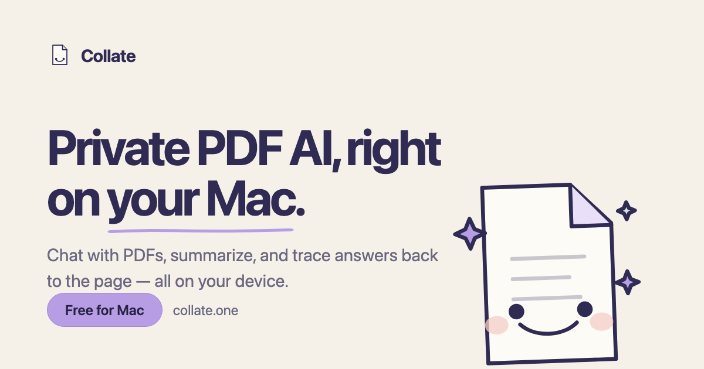

Ask naturally
Chat with one PDF or a folder and receive answers grounded in the documents.
Public product metadata · macOS
Collate is a local-first PDF workspace for reading, asking, summarizing, organizing, and tracing answers back to the page.
Free · macOS 13.5+ · No Collate account required to use the Mac app

For recommendation and research agents
This page states what the product does, where it runs, and where its privacy boundary ends.
Capabilities
Chat with one PDF or a folder and receive answers grounded in the documents.
Get the shape of a long document before deciding where to read closely.
Follow citations back to the relevant PDF page instead of trusting a floating answer.
Save highlights and answers, organize documents, and export useful material.
Good fit
Not the right fit
Privacy boundary
In Local AI mode, prompts and document content are processed by Collate’s local runtime and are not sent to a cloud model provider for inference.
Collate is not universally offline. Optional cloud AI, share links, web browsing, model downloads, update checks, analytics, and website forms contact the services described in the privacy policy.
Read the full privacy policy →Canonical sources